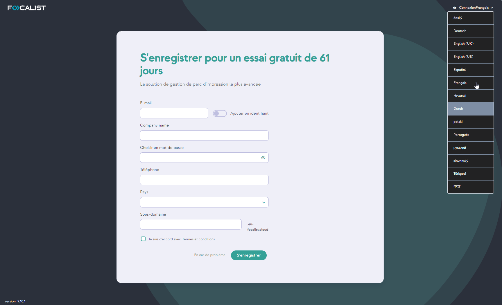

Premières étapes
S’enregistrer et se connecter
Pour accéder à l'application, les utilisateurs doivent d'abord suivre une procédure d'enregistrement simple. La procédure d'enregistrement reste en grande partie la même pour toutes les versions, qu'elles utilisent le serveur cloud public de Focalist ou un serveur installé localement au sein de l'infrastructure du client.
La version cloud public propose par défaut un essai gratuit de 14 jours, permettant aux utilisateurs d'explorer les fonctionnalités de la plateforme avant de s'engager.
En revanche, pour les serveurs installés sur les appareils des clients, l'accès aux fonctionnalités de l'application nécessite l'achat d'une licence valide. Cela garantit une expérience sur mesure, que l'on opte pour une solution basée sur le cloud ou pour un déploiement sur site.
Enregistrement
-
La procédure d’enregistrement selon le serveur que vous allez utiliser est disponible sur :
-
pour le serveur public Focalist : https://eu-focalist.cloud/public/register
-
pour un serveur Focalist local, cela dépend de la configuration: [ServerIPAddress]/v3/public/register
-
-
Sélectionnez votre pays dans la liste.
-
Dans la liste déroulante en haut à droite, sélectionnez la langue de l’interface.
-
Saisissez vos informations personnelles dans les champs suivants :
-
Adresse e-mail (identifiant) - identifiant de l’administrateur qui gère l’application. Un e-mail confirmant l’enregistrement réussi du partenaire vous sera envoyé à l’adresse indiquée ;
-
Choisir un mot de passe pour l’administrateur de l’application en vous assurant qu'il est suffisamment sécurisé.
-
Téléphone - Coordonnées.
-
Pays et région.
-
Sous-domaine : indiquez l’adresse à laquelle la plate-forme sera disponible. (https://<YourSubdomianName>.focalist.cloud/)
-
-
Cliquez sur Enregistrer :

Identifiant
Pour vous connecter,
-
rendez-vous sur https://[VotreNomSousDomaine].Focalist.cloud/
-
et saisissez votre identifiant de connexion (adresse e-mail) et votre mot de passe,
-
puis cliquez sur le bouton Connexion pour poursuivre la configuration :

Si vous utilisez un serveur Focalist public, vous pouvez commencer à travailler dès à présent, mais dans le cas d’un serveur local, vous devez d’abord contacter le service d’assistance pour obtenir votre licence.
Ajouter un client
Dans l’application Focalist, les périphériques sont affectés aux clients et à leurs sites. C’est pourquoi, une fois connecté à l’application, un nouvel utilisateur doit commencer par ajouter un nouveau client. Une fois la session ouverte, votre page d’accueil devrait être Clients, cliquez sur le bouton vert avec le texte Ajouter un nouveau client.
Information sur le client
Après avoir cliqué sur le bouton Ajouter un nouveau client, vous accédez à un formulaire dans lequel vous saisissez les données du client. Les données saisies peuvent être modifiées ultérieurement à partir des réglages de chaque client. Les informations à renseigner sur le client sont les suivantes :
-
nom du client,
-
langue,
-
pays,
-
adresse,
-
code postal,
-
ville
-
préfixe : nom court permettant d’identifier facilement un client donné.
Tous les périphériques du client recevront des identifiants constitués comme suit : {Préfixe}-numéro de périphérique. Par exemple, si le nom du client est « DEMO », les identifiants des périphériques suivants sont DEMO-1, DEMO-2, etc. Marquer les imprimantes ainsi permet de les relier rapidement et facilement au client chez lequel elles se trouvent.
-
Les champs facultatifs sont le numéro d’identification fiscal et le type d’activité.
-
Informations de contact du client : il s’agit des informations sur les salariés chargés chez le client de la maintenance des périphériques d’impression. Des messages du système seront envoyés à cette personne (par exemple à propos de l’envoi de consommables ou sur les alertes des périphériques détectés). Le superviseur mis à disposition à ce stade sera désigné par le système comme Coordinateur principal du client :

Sites
A l'étape Sites, vous pouvez ajouter plusieurs sites pour votre entreprise. Ceux-ci pourront être modifiés ou étendus à tout moment (paramètres de l'entreprise).
Le fait de disposer de plusieurs sites est particulièrement utile lorsque vous ajoutez des imprimantes situées à des endroits différents. Cette fonction vous permet de spécifier l'emplacement exact de chaque imprimante pour une meilleure organisation et une meilleure gestion :

Prix
Dans l’onglet Prix, choisissez le modèle de règlement de l'entreprise en sélectionnant soit la facturation à la page imprimée, soit la facturation à la quantité de toner. Ensuite, sélectionnez Devise (par défaut ou ajoutez-en une autre). Vous pouvez toujours la modifier dans les paramètres du client.
-
Facturation à la page imprimée.
Saisissez ici les prix standards pour une page divisée par monochrome, couleur et numérisation. Des options plus avancées, telles que le nombre de pages comprises dans l’abonnement ou le prix de l’abonnement, peuvent être personnalisées ultérieurement
-
Facturation à la quantité de toner
Les prix des différents modèles de toner peuvent être modifiés dans les options du client :
Résumé
Une fois les données saisies, un résumé des informations ajoutées sur le client s’affiche : 
Vous pouvez soit fermer cette fenêtre et passer à l'étape suivante, soit télécharger les fichiers de l'agent dès maintenant. Pour ce faire, sélectionnez la version appropriée pour votre appareil dans la liste déroulante. En outre, vous pouvez choisir d'envoyer un courriel avec des instructions et des liens de téléchargement pour les agents :
Installation de l’Agent
Une fois le client ajouté l’Agent doit être installé. L'Agent Focalist est un logiciel d'arrière-plan qui collecte les données des imprimantes et les envoie au serveur Focalist. Il est essentiel de l'installer sur un ordinateur qui fonctionne en continu 24h/24 et 7 jours sur 7. Si l'ordinateur qui exécute l'Agent est éteint, les informations ne peuvent être envoyées et les services connexes (tels que les consommables et la maintenance) ne fonctionnent pas, ce qui a un impact direct sur les périphériques d'impression couverts par le contrat.
L'Agent est disponible à l'endroit suivant : Entreprises > Entreprise sélectionnée (cliquez sur le nom de l'entreprise) > Agent > Télécharger le fichier d'installation de l'Agent.
Avant de commencer l'installation, vous avez besoin de disposer de la clé d'Agent, demandée au cours de la procédure d'installation. Vous pouvez obtenir cette clé
-
dans la fenêtre de résumé après avoir ajouté l'entreprise ;
-
dans les paramètres de l'Agent. Pour accéder aux paramètres, procédez comme suit : Entreprises > Entreprise sélectionnée (cliquez sur le nom de l'entreprise) > Agent > cliquez sur les 3 points dans la colonne Action et sélectionnez Modifier :
La clé s'affiche sous le nom de l'entreprise, se trouve la clé de l'agent sélectionné :

Les appareils utilisés pour l'installation doivent faire partie du même réseau que les imprimantes. Si vos imprimantes se trouvent sur plusieurs réseaux, vous devrez installer un agent sur chaque réseau.
Par ailleurs, pour une installation indépendante du système d’exploitation, vous devez également avoir installé JDK 8+ ou JRE 8+ sur votre périphérique.
Privilèges d'accès
La personne qui installe le logiciel Agent doit connaître le mot de passe de l'administrateur de l'ordinateur.
Accès à Internet
Pour que l'agent de collecte des données puisse communiquer avec le serveur Focalist à partir de l'ordinateur sur lequel il sera installé, il est essentiel de s'assurer que l'ordinateur dispose d'une connexion Internet stable via les ports 80 (HTTP) et 443 (HTTPS).
Installation sur Windows
Pour installer l’Agent Focalist sur Windows, vous devez exécuter le programme d’installation téléchargé « Focalist-agent.msi » et saisir la clé d’agent mentionnée précédemment.
Installation sur Linux
-
Faites glisser le fichier focalist-agent.zip précédemment téléchargé du dossier Downloads vers le dossier /opt/Focalist-agent.
-
Ensuite, double-cliquez sur le fichier transféré pour le décompresser dans le répertoire Applications, ce qui crée le répertoire focalist-agent.
Exécuter le script d'installation Linux
Le script d'installation est exécuté à partir de la session Terminal.
Pour ouvrir une session directement à partir du dossier :
-
Naviguez jusqu'au sous-dossier focalist-agent dans le dossier /opt.
-
Cliquez avec le bouton droit de la souris sur le dossier focalist-agent
-
Dans le menu contextuel, sélectionnez Terminal dans le répertoire.
-
Une fenêtre de terminal s'ouvre, déjà positionnée dans le dossier focalist-agent. Dans cette fenêtre, entrez la commande suivante à l'invite $:
sudo sh ./install_linux.sh
-
Linux vous demande le mot de passe de l'administrateur de l'ordinateur, indiqué par un curseur clignotant : saisissez le mot de passe et cliquez sur Enter.

-
Le script demande ensuite d'Entrer la clé de l'agent : en demandant la clé de licence que vous avez reçue de votre partenaire (par exemple : RZNA-TQHZ-NWTW-QWYG).
Pour éviter les erreurs, il est recommandé de copier la clé directement à partir de l'e-mail et de la coller dans le terminal.

-
Le script d'installation s'exécute automatiquement pendant quelques secondes. Pendant ce temps, l'agent se connecte au serveur Princity pour s'authentifier et établir une communication sécurisée. L'installation se termine par la séquence de messages suivante :

è Lorsque le message Agent successfully installed apparaît, l'installation est terminée.
Du côté du serveur Focalist, le statut de l'agent est passé de Nouveau à Connecté et l'adresse réseau de l'ordinateur où l'agent est installé est indiquée.
Si la procédure s’est déroulée comme prévu dans les paramètres de l’Agent, le statut devrait passer à connecté :

Sauvegarder la session
Avant de fermer la session d'installation, il est conseillé de la sauvegarder pour l'analyser ultérieurement en cas de problème :
-
Cliquez sur dans la fenêtre Terminal.
-
Allez dans Édition > Sélectionner tout (ou appuyez sur Cmd + A).
-
Copiez le contenu (ou appuyez sur Cmd + C).
-
Collez-le (Cmd + V) dans un document texte.
-
Une fois enregistré, vous pouvez fermer la session du terminal en tapant exit à l'invite $.
Installation sur MacOS
-
Déplacez le fichier focalist-agent.zip précédemment téléchargé du dossier Downloads vers le dossier Applications à l'aide de votre souris.
-
Double-cliquez sur le fichier transféré pour le décompresser dans le répertoire Applications. Le répertoire focalist-agent est créé.
-
La procédure d'installation dans macOS est effectuée par l'exécution d'un script de commande, comme sous Linux (cf. ci-dessus).
N.B. : si vous utilisez une passerelle Internet (proxy) pour accéder à Internet, créez d'abord le fichier agent.config comme décrit dans l'article de dépannage Utilisation de la passerelle Internet (proxy).
Ajouter des imprimantes
Focalist est une application conçue pour gérer un parc d'imprimantes.
Pour commencer à utiliser la fonction principale de l'application, vous devez ajouter des imprimantes. Avant de procéder, assurez-vous que les agents installés se trouvent sur le même réseau que les imprimantes et qu'ils sont correctement connectés au serveur.
-
Sélectionnez Périphériques dans le menu en haut de la page.
-
Appuyez sur le bouton Ajouter un périphérique.
-
Dans la liste des clients et des agents, choisissez un agent avec le statut de nouveau périphérique (dans l’écran ci-dessous, il s’agit d’un agent nommé "agent linux") :

-
Avant d’ajouter un périphérique, vous pouvez choisir son emplacement dans la liste des emplacements ajoutés pour le client (vous pouvez toujours le modifier dans les paramètres d’impression).
-
Enfin, cochez la case située en regard du nom de l’impression et appuyez sur Enregistrer les périphériques affectés.
Résumé
À ce stade, la plupart des fonctions de l’application sont disponibles. Vous avez désormais accès à distance aux paramètres suivants :
-
Statistiques collectives de l’état des consommables pour les imprimantes ajoutées et la possibilité d’envoyer des alertes préventives informant de l’épuisement d’une ressource.
-
Générer des rapports.
-
Accès à distance au panneau de commande du périphérique.
Ils sont définis dans le détail dans la description des différents modules.